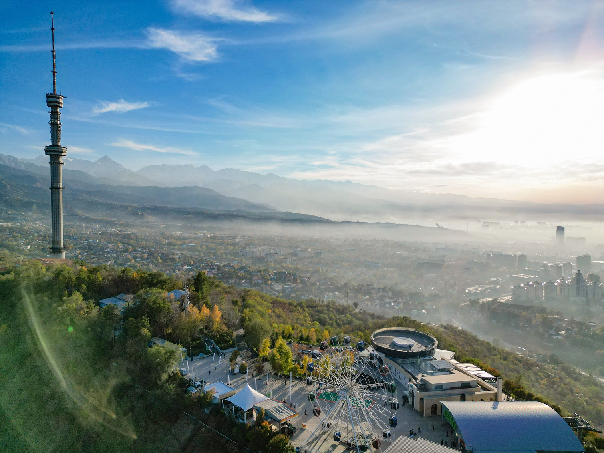

МЕДЕУ
Высочайший в мире каток с искусственным льдом, расположенный на высоте 1691 метр над уровнем моря. Отсюда открывается захватывающий вид на город и горные вершины.

КОК-ТОБЕ
Горная вершина, с которой открывается панорамный вид на весь город. Добраться сюда можно на фуникулёре, а наверху вас ждут рестораны, сувенирные лавки и знаменитая телебашня.
ЗЕНКОВСКИЙ СОБОР
Уникальный памятник деревянного зодчества, построенный без единого гвоздя. Собор пережил землетрясение 1911 года и сохранился до наших дней в первозданном виде.
ЗЕЛЕНЫЙ БАЗАР
Самый известный рынок Алматы, где можно найти всё: от свежих фруктов и специй до национальных сувениров. Здесь царит атмосфера настоящего восточного базара.